Трей OpenDisplay
Снимки сделаны 14.10.2026 с реального экрана (MacBook + SunWind SM-27QI201 через Ugreen). Структура повторяет меню BetterDisplay 5, интерфейс и поведение доработаны.
Было → стало
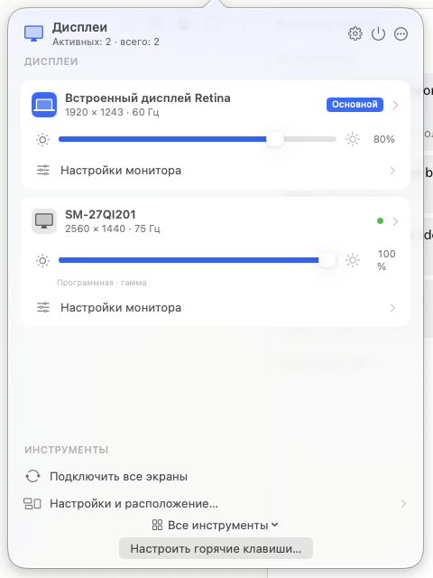
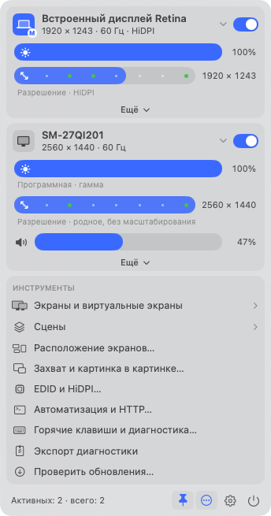
Как управлять
Каждая функция
Секция экрана
- Шапка: значок (синий с «M» — основной экран), имя, режим (размер · Гц · HiDPI). Клик сворачивает секцию, это запоминается. Переключатель отключает экран; последний активный отключить нельзя.
- Яркость: один ползунок. Сам выбирает путь: встроенный → DisplayServices, внешний → DDC, если DDC не работает или включено «Программная яркость» → гамма. Под ползунком написан выбранный способ.
- Разрешение: ползунок по размерам с родным соотношением сторон. Зелёные точки — родное и рекомендуемое macOS. Пока тянешь, показывает размер; отпустишь — применяет.
- Громкость: по DDC, только если монитор её отдаёт. Значок динамика — выключить/включить звук.
- «Ещё» раскрывает все настройки этого экрана.
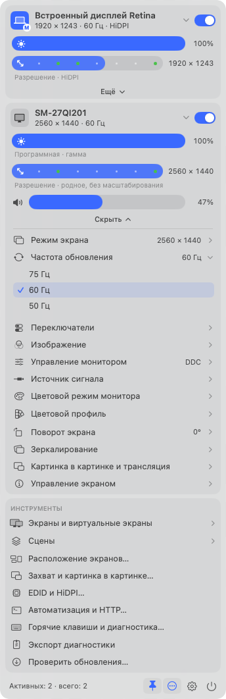
«Ещё» — меню экрана
Как device menu у BetterDisplay: режим, частота, переключатели, изображение, управление монитором (DDC), источник сигнала, цветовой режим монитора, цветовой профиль, поворот, зеркалирование, картинка в картинке, управление экраном. Справа — текущее значение. Можно раскрыть несколько пунктов сразу, соседние не прячутся и не закрываются.
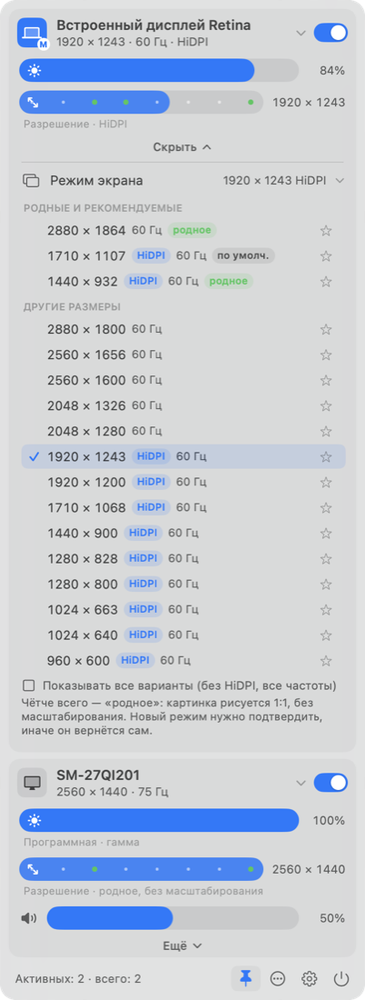
Режим экрана
- «Родные и рекомендуемые» всегда сверху. «Родное» = картинка 1:1 без масштабирования, самая чёткая. Например, у MacBook это 1440×932 HiDPI и 2880×1864; «по умолч.» — то, что выбирает macOS (1710×1107).
- ★ добавляет режим в «Избранные».
- По умолчанию одна строка на размер. Галочка «Показывать все варианты» — все частоты и варианты без HiDPI.
- Служебные режимы, которые macOS помечает как непригодные для рабочего стола, отфильтрованы (у SunWind таких было 49 из 104).
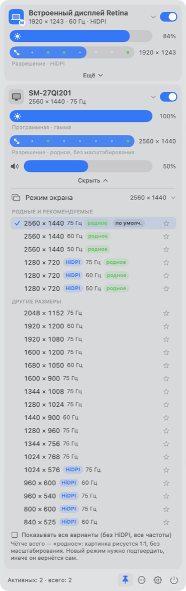
Режим экрана — SunWind
Родное 2560×1440 (75/60/50 Гц), 1280×720 HiDPI — тоже 1:1 по пикселям. Ниже остальные размеры. Масштабированные размеры ниже родного выглядят мягче, это видно по отсутствию метки «родное».
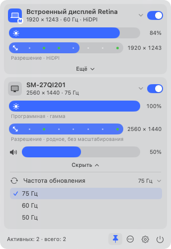
Частота обновления
Частоты для текущего размера и плотности. Пункт показывается, только если частот больше одной.
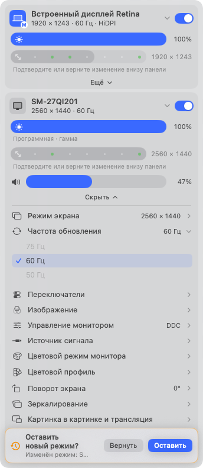
Подтверждение нового режима
- После смены разрешения или частоты внизу всплывает плашка «Оставить новый режим?» с именем экрана и таймером. Она поверх содержимого и ничего не сдвигает.
- Без ответа режим сам вернётся через 10 с — страховка от чёрного экрана.
- Двигать ползунок или выбирать режим этого же экрана дальше можно сразу: предыдущий шаг сохраняется, новый получает свой таймер.
- Перестройка экранов при смене режима теперь идёт в фоновом потоке, а не в главном, где раньше подвешивала весь OpenDisplay (замер не делался).
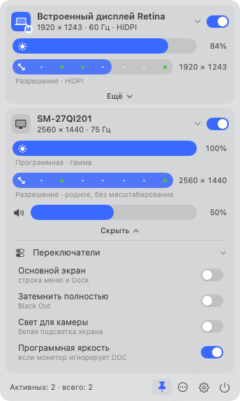
Переключатели
HiDPI (если для текущего размера есть вариант с другой плотностью), «Основной экран», «Затемнить полностью» (Black Out — недоступно, если это последний светящийся экран), «Свет для камеры», «Усиление XDR» (встроенный XDR, Labs), «Программная яркость» (внешний, если монитор игнорирует DDC).
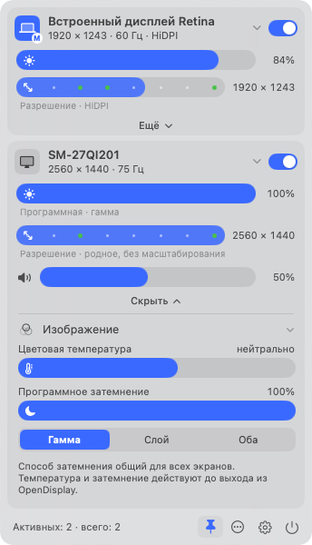
Изображение
Цветовая температура и программное затемнение со способом «Гамма / Слой / Оба». Действуют до выхода из OpenDisplay.
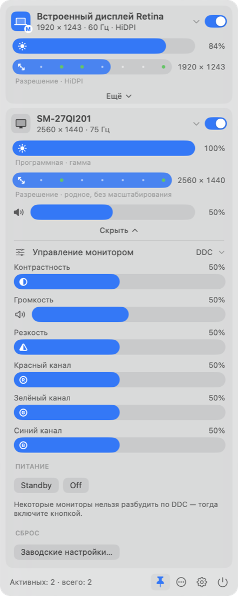
Управление монитором (DDC)
Все DDC-регуляторы, которые монитор отдаёт: контраст, громкость, резкость, усиление R/G/B. Питание: «Режим ожидания» и «Выключить». Сброс к заводским — в два клика. Если монитор не отвечает по DDC, есть подсказка и кнопка «Повторить опрос».
Важно для SunWind через Ugreen: значения читаются из монитора, но меняется ли от них картинка физически, не подтверждено. Поэтому для этого монитора включена программная яркость.
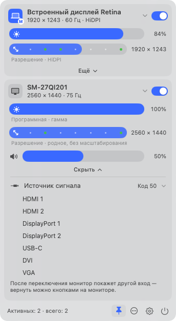
Источник сигнала
Переключение входа по DDC. Монитор сейчас сообщает код 50: его нет в стандартном списке MCCS, поэтому он показан как «Код 50».
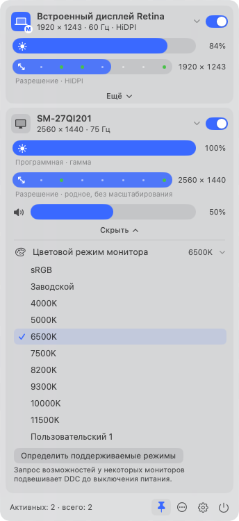
Цветовой режим монитора
Пресеты монитора (VCP 0x14). «Определить поддерживаемые режимы» запускается только вручную: у части мониторов этот запрос подвешивает DDC до выключения питания.
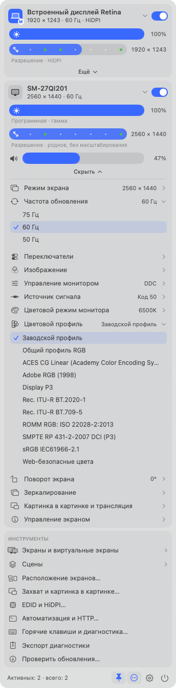
Цветовой профиль
«Заводской профиль» и все установленные RGB-профили ColorSync. Раньше список был пустым: macOS отдаёт тип как "RGB " с пробелом, и код отбрасывал все профили. Исправлено, теперь список работает и в окне настроек.
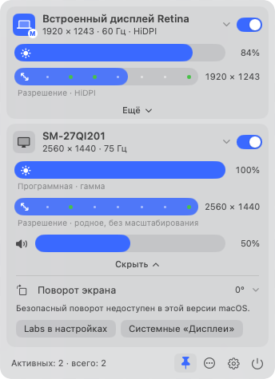
Поворот экрана
0/90/180/270°, если экспериментальный поворот включён и поддерживается. На этой macOS безопасный поворот недоступен — трей честно это пишет и ведёт в Labs или в системные «Дисплеи».
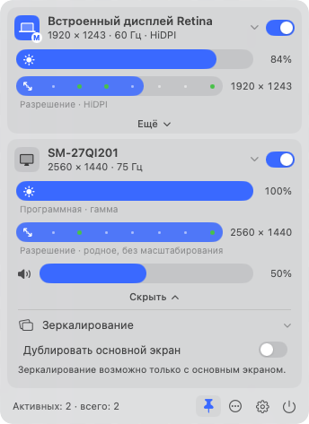
Зеркалирование
Для неосновного экрана — «Дублировать основной экран». Для основного — список экранов, на которые его показывать.
Картинка в картинке и трансляция
Открывает окно захвата экрана (ScreenCaptureKit, поворот, отражение, LUT).
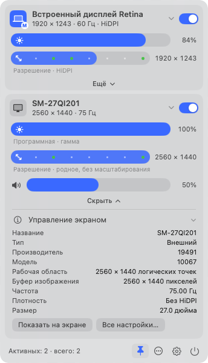
Управление экраном
Сведения из EDID и CoreGraphics, «Показать на экране» (крупная подпись на самом мониторе) и «Все настройки…» — окно настроек сразу на этом экране.
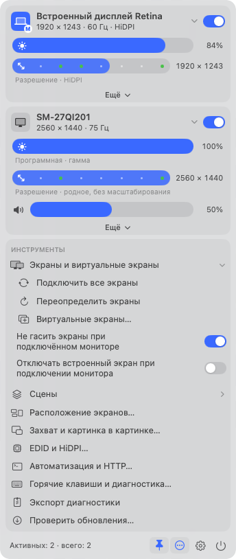
Инструменты (кнопка «…»)
«Экраны и виртуальные экраны»: подключить все, переопределить экраны, виртуальные экраны, «Не гасить экраны», «Отключать встроенный». «Сцены»: применить или сохранить. Ещё расположение, захват/PIP, EDID и HiDPI, автоматизация и HTTP, горячие клавиши и диагностика, экспорт диагностики, проверка обновлений.
Сравнение с BetterDisplay
| BetterDisplay | OpenDisplay | Состояние |
|---|---|---|
| Секция экрана, шапка с переключателем, «M» у основного | Так же; плюс ⌥-клик «показать экран» | есть |
| Ползунки яркости (combined), разрешения, громкости, контраста | Яркость, разрешение, громкость в секции; контраст — в «Управлении монитором» (у BD он по умолчанию тоже скрыт) | есть |
| Display Mode, избранные, родные/рекомендуемые | Есть + фильтр служебных режимов | есть |
| Refresh Rate, Rotation, Color Profile, Input Source, Device Control, Toggles, Manage Display | Есть (поворот на этой macOS выключен самим ядром) | есть |
| Image Adjustments | Только температура и программное затемнение | частично |
| Mirror Display — на любой экран | Только с основным экраном (ограничение ядра) | частично |
| Picture in Picture / Stream Display | PIP — в окне захвата; трансляции экрана на экран нет | частично |
| Tools: подключить все, виртуальные экраны, группы, сцены | Есть; создание виртуальных экранов и группы — в окне настроек | есть |
| Detachable menu, ⌥-клик по значку, правый клик | Закрепление 📌, ⌥-клик → настройки, правый клик → короткое меню | есть |
| Color Mode (8/10 бит, RGB/YCbCr, HDR), Enable HDR | В ядре нет | нет |
| Night Shift / True Tone / тёмная тема в меню | В ядре нет | нет |
| Configuration Protection по экрану, Apple Display Presets, Notch | В ядре нет (есть защита расположения в настройках) | нет |